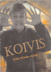

Koivis 01/04-05
|  | Tässä
numerossa: - Päätoimittajien sanat - Oppilaskunnan hallituksen vaalien tulokset - Say it, oukkei ? - Idan kokkisota - KouluGallup - Muotimessut - Mopodisko - Kysy ÄssÄ`ltä - Novelli : Juhlat Kreivi Draculan tapaan - Jatkosarjis - Nitjam - Halloween-terkut - Infffo - Tha toimitus ! |